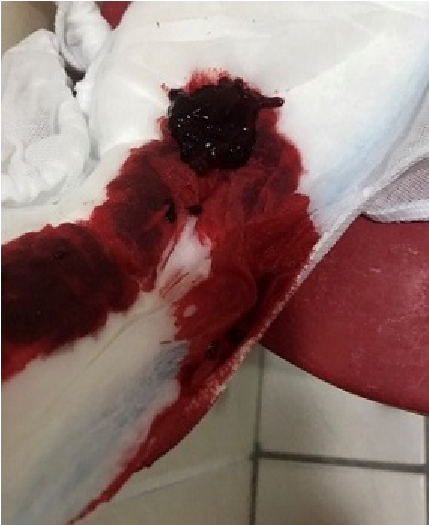

蘇女士 G3P3，懷孕 34 週早期破水緊急剖腹生產，產後第 9 天在家來電主訴：「擠奶 30 分鐘後，身體移動時陰道感覺有東西流出，發現有如 50 元硬幣大小的血塊（如圖示），廁所途中仍持續出血，2 天前開始喝生化湯」，下列解釋何者最不適當？ 

顯示正確答案
正確答案：(A) 可能有子宮破裂情形，建議儘速到醫院進一步處理

正確答案：(A) 可能有子宮破裂情形，建議儘速到醫院進一步處理
「護理師國考刷題」App 內有本題完整詳解，還能把它加入錯題本、用閃卡定期複習。
4,810 題歷屆考古題全部附詳解。